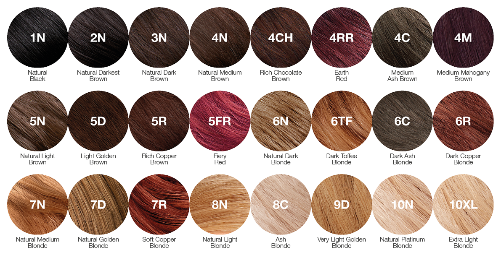
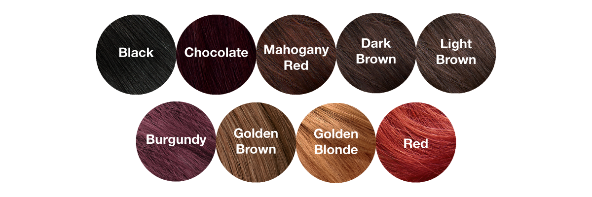

Цветовая Палитра Tints Of Nature
Перманентный краситель
Tints Of Nature - это первая линейка стойких, перманентных красителей для волос, содержащих сертифицированные органические ингредиенты, используемые в улучшенной формуле для закрашивания седины. Наша уникальная смесь натуральных и органических компонентов в сочетании с растительными экстрактами и витаминами С и Е эффективно улучшают, защищают и увлажняют ваши волосы в процессе окрашивания.
Что означают эти буквы?Каждый оттенок имеет уникальный буквенный и цифровой код, они связаны с оттенком и глубиной цвета.
Глубина 1 = Черный | Глубина 10 = Светло-Русый
N = натуральные оттенки / C = пепельные / холодные оттенки | CH = шоколадные оттенки | M = оттенки красного дерева | D = золотистые оттенки | R = красные оттенки | RR = землисто-красные оттенки | FR = огненные оттенки | TF = оттенки ириски | XL = Очень светлые оттенки
Полуперманентная Henna Cream
Наши увлажняющие полуперманентныекраски для волос Henna Cream разработаны с использованием сертифицированных органических ингредиентов. содержащих алоэ, ромашку и зеленый чай, которые увлажняют и успокаивают волосы во время окрашивания, в то время как хна питает их. Не содержит PPD/ PTD, аммиака, парабенов и резорцина-это щадящая и натуральная альтернатива обычному домашнему красителю для волос.
